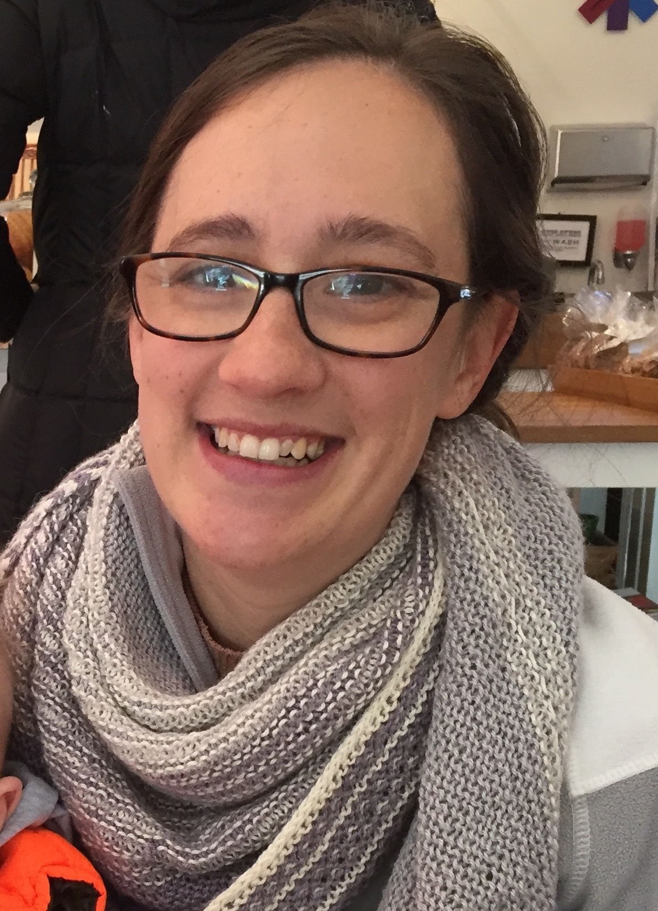

Instructor: Dr. Mary Glover
Email: mglover@bowiestate.edu
Slack: We will also utilize the Slack software for communication (see technological tools for more information).
Virtual office hours: Thursdays, 9:30 - 10:30 AM on slack
Email or slack are both good ways to get in contact with me. I will do my best to respond in a timely manner, generally within 24 hours, although it may be longer on weekends and holidays.
This course is an Introduction to Biology intended to serve Biology and STEM majors. For those continuing in Biology, this is just the beginning. For others, this might be your one and only biology course. This course should provide students with the basic understanding of concepts and the language of the molecular and cellular basis of life. At the end of the course students can expect to have a working knowledge of such concepts as the biochemical components of cells, the structural features of the cell, cell division, and information transfer within and among cells as well as the principals of inheritance.
This course has no prerequisite (ENG 101 and MATH 121/125/141 may be co-requisites) and it satisfies the Science course with a lab in the General Education Requirements.
I understand that the global pandemic caused by COVID-19 may be making your lives uncertain, difficult, and stressful. Your health, safety, and well-being are my priority. Please do not hesitate to reach out to me with concerns throughout the semester. I will do my best to provide students with the resources they need.
To best facilitate an engaging and effective online learning environment, we will utilize various software. In order to be successful in this class, students should have access to a personal computer with internet access. If you do not, please contact Dr. Glover ASAP.
Blackboard is the BSU course management system. Students use your BSU account to login to the course from the Blackboard login page, http://bsuonline.blackboard.com. Blackboard is the main informational hub for the course. Students should expect to log into Blackboard multiple times each week.
Through Blackboard, students access:
Zoom is free, video conferencing software which will be used for all scheduled class meetings. All zooom class sessions can be accessed through the app in Blackboard. Students can join class sessions through their internet browser or by downloading the zoom app to their desktop computer or phone. For more information about joining zoom meetings, see here.
Virtual labs will be organized in Microsoft Office Online, using Microsoft Word, Powerpoint, and Excel. All Bowie State students have access to Microsoft Office 365 for Education through their BSU account. Information about accessing your Microsoft Office account can be found through DIT. Each student will have their own OneDrive folder where they will submit assignments and which is shared with instructors. The student lab folder contains materials needed to complete weekly lab tasks. Students will receive access to this folder at the beginning of the semester.
Slack is a communication platform which can be accessed through an internet brower, desktop client, or mobile app. In this course, we will use slack for:
Students are encouraged to ask questions in slack channels. Students can get a quicker response to questions in slack because both instructors and students can answer questions. Students are encouraged to engage with one another on slack, but all major announcements will be made through email. To learn more about slack or download the desktop app, go to slack.com. You will receive an invitation to our class channel at the beginning of the semester.
IMPORTANT NOTE: Confidential or sensitive information should not be discussed through slack, as slack is not FERPA compliant. Please discuss sensitive information, such as grades via email.
BIOL 102 will be delivered entirely online. Class sessions will be on Zoom by Dr. Glover during the normal scheduled class times.
Each week, students will receive course content through Blackboard, including readings, assignements, lecture videos, and discussion questions. Instead of having students watch a lesson virtually during regular class times, Dr. Glover will record the lectures and students are will be expected to watch the lecture videos before the class. During class sessions, we will engage with the material for the week—clarifying key points, practicing test questions, and applying the knowledge to broader concepts.
Lab assignments are due on Mondays at 5:00 PM. Lecture assignments are due on Thursdays at 5:30PM.
| Day | Time | Class session |
|---|---|---|
| Monday | 5:00 PM - 6:50 PM | Laboratory |
| Tuesday | 5:30 PM - 6:45 | Office hours |
| Wednesday | 5:30 - 6:45 | Lecture discussion |
Dr. Glover will briefly review the lab assignment for the week and students will have an opportunity to ask questions about the lab assignemnt. The remaining class time, Dr. Glover will be on zoom to assist as students work through the lab on their own.
Dr. Glover will be available on zoom for office hours during the regularly scheduled class time on Tuesdays. This is a time for students to answer questions as they work on the material for the week.
Discussion sessions are reserved for applying the student's knowledge of the weekly course material. We will work on review higher level, critical thinking questions and sample exam problems during this time. The discussion time will be an interactive class session, where students are expected to actively participate.
The required textbook is a modified version of Principles in Biology, 2nd ed. by Robert Brooker , ISBN-10 : 978-1-307-04842-1 .
Student can get the book in a few different places. If you are not sure about the version that you find, please contact Dr. Glover. - The bookstore carries a version of this textbook which only includes the chapters we will cover at a reduced price. - You can rent the textbook from amazon for around $40 (as of June 2020). linked here - You can also find used copies online from a variety of sources of the full book, which would be fine for the class.
Important Note: You will not need a subscription to CONNECT. Some versions come with a subscription, which is a more expensive version of the book and we will not be using this platform in class.
Students with disabilities who wish to receive ADA accommodations should report to the Disability Support Services, located in the Thurgood Marshall Library, Room 079, or contact Dr. Michael Hughes, (301.860. 4067 or mhughes@bowiestate.edu).
If you do have documentation from Dr. Hughes, please be sure to provide it to your instructor as early in the semester as possible so that accommodations can be made. Students who suspect that they have a disability but do not have documentation are encouraged to contact DSS for advice on how to obtain appropriate evaluation.
By the end of the course, students can expect to be able to:
Demonstrate mastery of core biological principles
Communicate biological principles accurately and effectively
Engage in biological inquiry
Connect biological principles to broader, societal issues
Prepare for future biology courses
Your grade will be calculated by using a percentage system. All of your grades will be recorded in Blackboard including your current course grade. Exam re-grading must be in written form through email. Please email Dr. Glover with justification for your exam re-grade. Grading disputes must be addressed it within 5 days of getting your exam/assignment back.
| Component | Percentage of grade |
|---|---|
| Assignments | 15% |
| Concept checks | 5% |
| Discussion | 10% |
| Scientific Literacy Assignments | 10% |
| Exams | 40% |
| Laboratory | 20% |
Grading scale: A: 90 - 100%, B: 80 - 90%, C: 70 - 80%, D: 60 - 70%, F: < 50%
Before each class, students will be assigned reading from the textbook and/or other readings. In addition to the reading, there will be a set of questions based on the readings (for example, definitions, outlines, etc.) to be completed on Blackboard. These questions are to ensure that students are prepared for class and have engaged with the reading assignments. The problems will be used in the Thursday discussion session, therefore these assignments are not accepted late. However, the lowest two scores will be dropped at the end of the semester.
Additionally, there will be periodic assignments to aid in student learning of the content, including but not limited to data analysis, infographics, and problem sets.
Concept checks will be given every two weeks to assess student progress on class topics. Concept checks are designed to allow students to practice for exams and for instructor to assess competency in topics. Students are expected to complete the concept checks closed book and independently. This is to allow both the student and the instructor to identify what topics need improvement. Answers on concept checks that are not completed independently and in your own words will receive a grade of zero.
Students will be given discussion questions to answer in slack channels every two weeks. Students will have one week to answer the discussion questions independently and post their initial response. Students will then have one week to engage with and reply to other students' responses. Students are expected to make at least 2 replies to discussion question.
In this assignment, students explore the impact of science in society by focusing on the racial injustice in science or scientific misconceptions. Students will write a research paper (approximately 800-1,000 words). More details and grading rubrics will be available on blackboard. The final assignment is due on October 30th. There will be multiple checkpoints in the semester for feedback on the assignment. Students may not work on the same topic and the specific topic must be approved by Dr. Glover.
Students have the option of two assignments:
In light of recent spotlights on social and racial injustice, this project will relate to identifying, understanding, and addressing racial inequalities as it relates to science. Several topics related to various scientists who have been associated with presenting science as a way to defend racism/racist beliefs and several scientific studies dehumanizing black individuals have been identified. In this project, students wiill research these topics/individuals and reflect on how to overcome challenges associated with their wrong doings.
There are many misconceptions about science concepts that are persistent in society (i.e. vaccinations cause autism). This misinformation associated with scientific topics can decrease scientific literacy. In this paper, students will research the scientific consensus on a specific topic and reflect on the impact scientific misconceptions have in society.
There will be 4 unit exams given during the semester, each worth 10% of the total course grade. Format will be true/false, multiple choice, matching, short answer, data analysis, and essay. To reflect the nature of biology and the interrelatedness of concepts, all exams will be cumulative.
If you know that you will miss an exam for an excused absence, let the instructor know ASAP to arrange for a make-up exam. A student must notify the instructor and be approved for a make-up exam prior to the exam date to be eligible for a make-up exam. Make–up exams must be completed within one week of the original date of the exam.
All exams are individual assessments. All answers on this test must be written in a student's own words. All submitted answers must not be the same wording as what is found online, in the text book, or in the online notes. This is considered plagiarism. Also, if you are working with other students and you have the same answers, this is considered cheating. Any evidence of these will be shared with department and university administration and anyone caught cheating/plagiarizing will be disciplined.
In the laboratory component of the course, students will work on an “authentic” research question. Students will perform on a semester long project, where they will work on a single research question from beginning to end. Students will run an introductory experiment to learn how to use specific experimental methods and then will work on a research project that they design utilizing DNA barcoding. To learn more about DNA barcoding, visit the barcode of life website.
The lab grade of the course will consist of the following components:
Each week, students will receive a virtual lab task to complete. The lab assignment will include:
Each student is expected to keep an ongoing document as a lab notebook throughout the semester in their Microsoft OneDrive lab folder. A lab notebook entry is required for each lab class. Lab notebook entries must be done in a timely manner as this is important to ensure accurate record keeping of experiments.
Lab assignents build on each other; therefore students must complete the lab assignemts in order. Students may not do a lab assignment until they have completed all previous assignments.
Students will create a lab poster summarizing the class project. The poster should provide an accurate and complete overview of the experiment done in class including background information, methods, results figures, and a discussion of what the results mean. Students should be prepared to present the poster in front of instructors and/or other students. Students will begin working on the poster in the middle of the semester to receive feedback from the instructor on drafts. The final poster will be due at the end of the semester.
Students are expected to attend all class sessions on Mondays and Thursdays and to actively participate. Class attendance is necessary to be successful in this course as there will be material that is only available by attending class. Furthermore, it is the student’s responsibility to obtain class notes when absent.
Please be aware that per University regulations five (5) unexcused absences may result in an automatic F as the final grade in the course. Students are considered absent if they arrive 30 minutes late to class. When possible, please contact Dr. Glover prior to a missed class, to ensure that you remain on track in the course. Written documentation of excused absence (i.e. illness, court appearance, school approved athletic event) must be submitted to the professor within 3 business days from the missed date of class.
Due dates for assignments are provided on Blackboard and on the course schedule. In general, lab assignments are due every Monday, and lecture assignemnts are due every Thursday. Instructor feedback will be in given in order of submission.
Students have 5 late passes
for the semseter. This allows students to turn in an assignment late, for any reason, no questions asked. Each late pass equals 1 day late. For example, a student can use all five passes at once to turn in an assignment five days late. Or a student could use one pass on five separate assignments to turn in each a day late. After late passes are exhausted, 10% will be deducted for every day late. It is a student's responsibility contact Dr. Glover to use a late pass. All assignments must be submitted by the last day of classes, Monday, December 14.
For extunating circumstances (for example, hospitilization) where it is impossible for students to submit assignments, please contact Dr. Glover. Exceptions can be made at the instructor discretion.
Late passes do not apply to reading assginments, discussion forums, or exams which must be completed on the scheduled date. If a student is unable to take an exam on the exam date, the instructor must be notified prior to the exam. Otherwise, the student will receive a 0 on the exam.
Academic integrity is taken very seriously in this course. A student's failure to use their own words is plagiarism. Student's working together on independent assignments is cheating. The instructor is required to report to the Department Chair and/or Dean all instances of academic misconduct, including cheating, fabrication, plagiarism, and the facilitation of such acts. The consequences of violating this policy may result in a zero for an examination or assignment, a failing grade for the course, or even dismissal from the university.
Please familiarize yourself with the university's policy (see below).
University Policy Regarding Academic Honesty from the Undergraduate catalog
Students are expected to conform to a strict standard of academic honesty. Cheating onexaminations, plagiarism, unauthorized collaboration with others on assignments, submittingwithout authorization duplicate assignments for credit in more than one course, and improper acknowledgment of sources of material are intolerable offenses that carry serious penalties.
Policy on Plagiarism
Plagiarism is the act of representing another’s ideas, words, or information as one’s own. Every student writing a paper should be aware of the following principles.
- All directly quoted materials must be identified as such by quotation marks. The source(s) of this material must be acknowledged.
- When borrowed ideas or information is not directly quoted by a student, the student should have so assimilated this material that it is indeed being expressed in his/her own words. However, just as in the case of direct quotations, the sources of suchborrowed ideas or information must be acknowledged.
The sources of ideas or information lying well within the realm of common knowledge (i.e., material that would be known by anyone familiar with the subject under discussion) need not be acknowledged.
Students guilty of plagiarism are subject to severe penalties, ranging from failure for the assignment to failure in the course or, in extreme cases, dismissal from the University. The instructor, in consultation with the Departmental Chair and the School Dean,shall determine the appropriate sanction to be imposed. Students appealing the imposed sanction must present their appeal in writing to the Provost for a final resolution.
Procedures for Handling Cases of Alleged Infractions of Academic Honesty
- Faculty members are required to deal directly with any academic infractions. Actions taken must reflect the seriousness of the infractions and could range from a verbal warning, an assigned grade of “F” for the course, academic suspension, to dismissal from the University.
- In cases where the instructor concludes that the infraction is severe, a recommendation may be made to the Dean for academic suspension or dismissal from the University.
- The Dean may arrange a hearing with individuals (faculty members from another department and student from the Judicial Board) to evaluate the appeal. The Dean will render a final resolution.
The mission of the Tutoring Program at Bowie State University is to provide students with efficient support so they can succeed academically.
PRISEM Tutoring Center is located in the Computer Science Building in Room 107. You can a request a tutoring session during the center’s hours of operation (Monday-Friday from 9 am to 6 pm) in two-ways: walk-in and appointments. For more information, please call 301-860-3999. Online tutoring services are available. It can be accessed through Blackboard or directly: www.smarthinking.com. For a full list of available subjects and schedules, please visit: http://www.smarthinking.com/static/pub_common/hours.cfm?st=1
Smarthinking provides online tutoring 24 hours a day, 7 days a week. It can be accessed through Blackboard.
The Writing Center at Smith Vidal Literacy and Language Center helps all Bowie State University students become stronger and more confident writers. Through one-on-one sessions with writing consultants, you will be empowered to overcome challenges in any stage of the writing process. Come with your assignment, your draft, and your questions. Sessions last up to 50 minutes and must be scheduled at least one day in advance. Visit the Writing Center in Room 204 of the MLK Building, or contact them at (301) 860-3720 or writingcenter@bowiestate.edu to make an appointment today! For more information, visit www.bowiestate.edu/writingcenter.
The Thurgood Marshall Library (TML) provides vital resources and services to meet the information and research needs of the Bowie State University community. Visit the Library in-person, on the internet at www.bowiestate.edu/academics-research/library or contact them at (301) 860-3850. .
You can access free online editions of textbooks at the National Center for Biotechnology Information (NCBI) website: http://www.ncbi.nlm.nih.gov/entrez/query.fcgi?db=Books. Use the search bar to find relevant books.
CK12.org offers free flexbooks and other learning resources to assist on your educational journey. The link below will access the Biology book. It provides a broad overview on topics but it is not very detailed nor comprehensive for our course. Nonetheless, you may find it valuable. It can be accessed through Blackboard or by: http://www.ck12.org/book/CK-12-Biology/